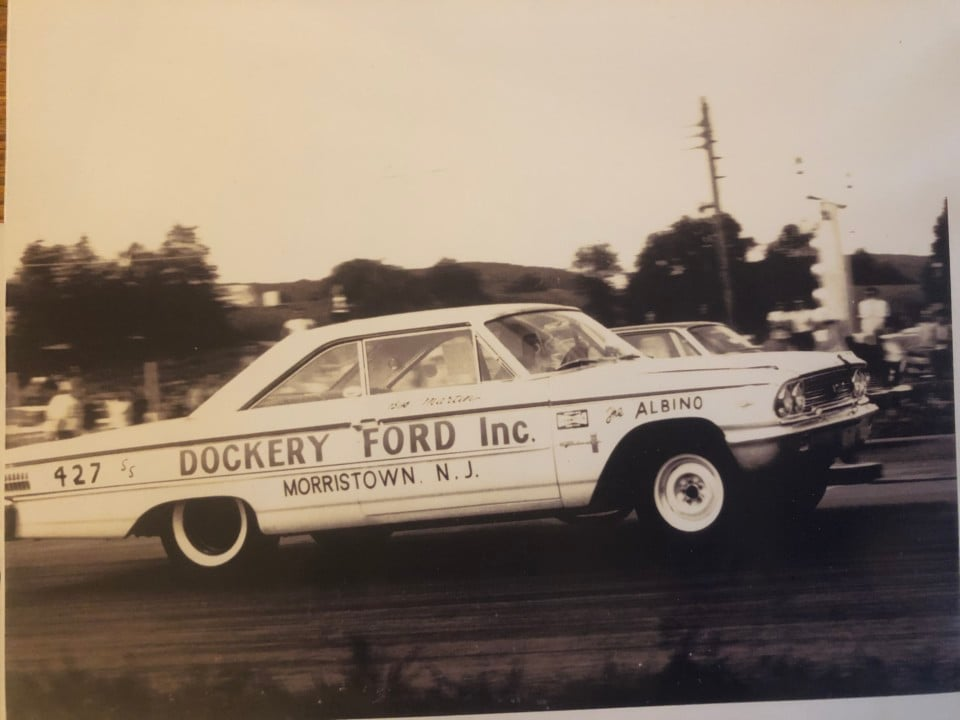
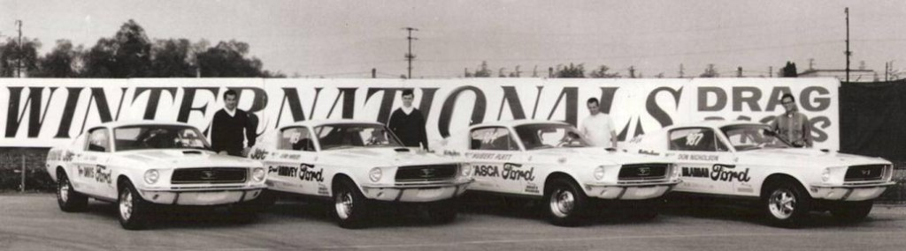

Experimental Muscle Machines of the 1960s
In the early 1960s, Ford Motor Company got deeply involved in drag racing to promote its performance image. The Super Stock or (SS) this category of highly modified, drag-racing Fords that are built to look like ordinary, factory passenger vehicles but are equipped with specialized engines and chassis components to achieve high performance
Ford worked with independent teams and drivers like Gas Ronda, Les Ritchey, and Phil Bonner — all pushing the boundaries of drag racing with Ford’s factory support.
The Super Stock programs helped Ford develop technologies and engines that would dominate drag racing and influence muscle car development through the rest of the 1960s and beyond.

